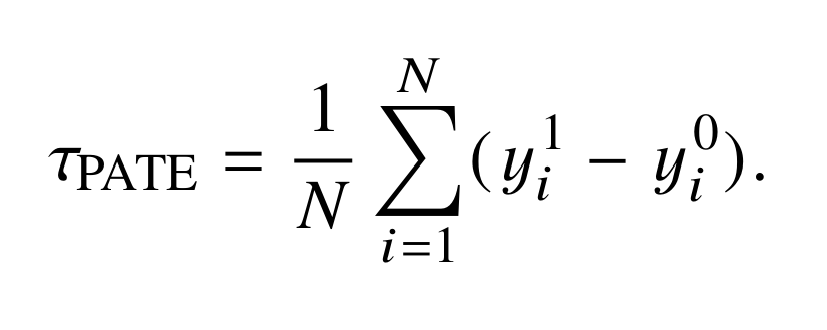

Individual, Group, and Population Effects
This section introduces the concepts of treatment effects at different levels. We’ll explore how effects vary across individuals, groups, and populations, and why these distinctions matter in causal inference.
Introduction to Group Estimands
Here we discuss the implications of choice between Sample, Population, and Conditional treatment effects.
Who do you want to know about? Who can you know best about with what you have?
And how are you discussing and assuming about those new findings?
We seriously reccomend the initial thinkCausal modules (Potential Outcomes, Causal Estimands, Estimands 2) before covering this one,
as the content is most helpful after solidifying that knowledge.
Population Average Treatment Effect (PATE)
A population is defined by your question and its context; Who do you care to know about?
Some people (like U.S. Census officials), care about the entire population of the United States.
They send out thousands of messages to get their best estimates of that group (people who live in the United States).
Some people may care only about a city, a town, a school, or some other specific, well-defined group of people.
We call that their population of interest. The entire group of people that they care to know about.
Like with the U.S. Census survey, we cannot guarantee our population admits into to our experiment,
and we also might not want them to. What is sometimes most practical is a random and representative sample of a large population, and work with them.
Realistically, the people (or, more generally, experimental units) in a social or medical
experiment are typically not a random or representative sample of any known or well-understood
population of inference. In fact, often the more well-tailored a sample is for making causal inferences for a given sample,
the less likely the sample is to be a random sample from, or representative of, a known population.
However the population average treatment effect (PATE) is often a goal in causal inference.
Group-Level Effects (SATE)
Fusce scelerisque magna nec felis imperdiet, a fermentum lorem viverra. Sed id felis in mauris convallis.
Aliquam erat volutpat. Sed euismod libero in tortor tristique, in tempus risus gravida.
Morbi ut turpis non velit pretium vehicula. Nunc a orci eu urna volutpat cursus.
Population-Level Effects (PATE)
Vestibulum ante ipsum primis in faucibus orci luctus et ultrices posuere cubilia curae; Mauris ut purus at leo vehicula.
Curabitur et ligula non sapien dignissim elementum. Etiam a neque vel elit consequat tempor.
Pellentesque habitant morbi tristique senectus et netus et malesuada fames ac turpis egestas.
Summary and Next Steps
Curabitur mollis massa sed nulla efficitur, a hendrerit mauris tincidunt. Donec sit amet eros sit amet dolor vehicula blandit.
Fusce ac metus ut sapien congue scelerisque. Praesent ut neque ac purus vehicula porttitor.
Vivamus ac quam non nisi sollicitudin ultrices. Integer in metus et tortor efficitur bibendum.
Extra line
Extra extra line
Final line
